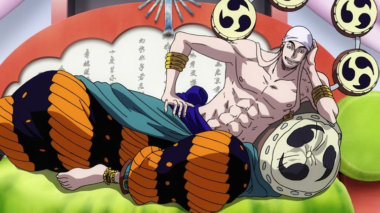
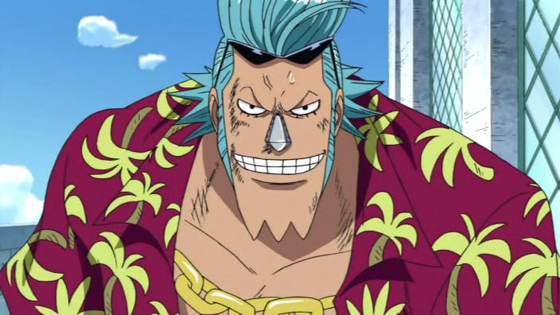
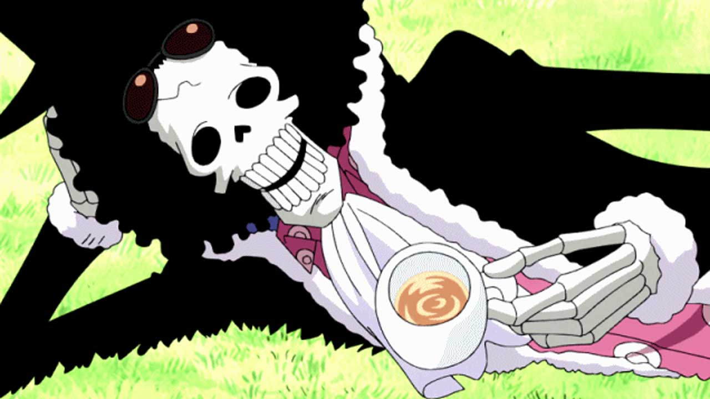
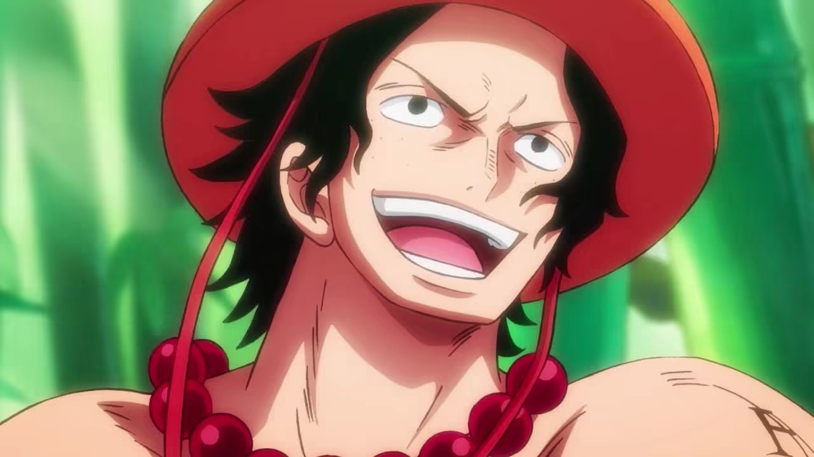
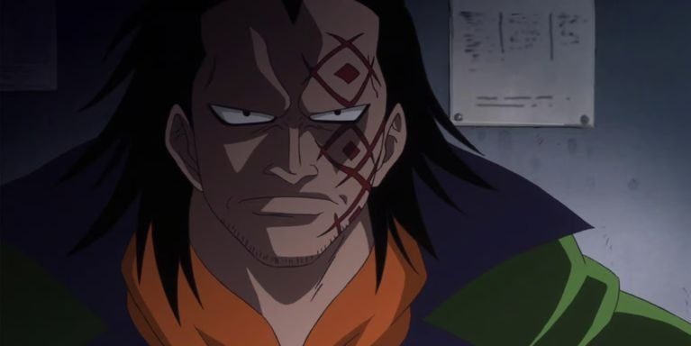
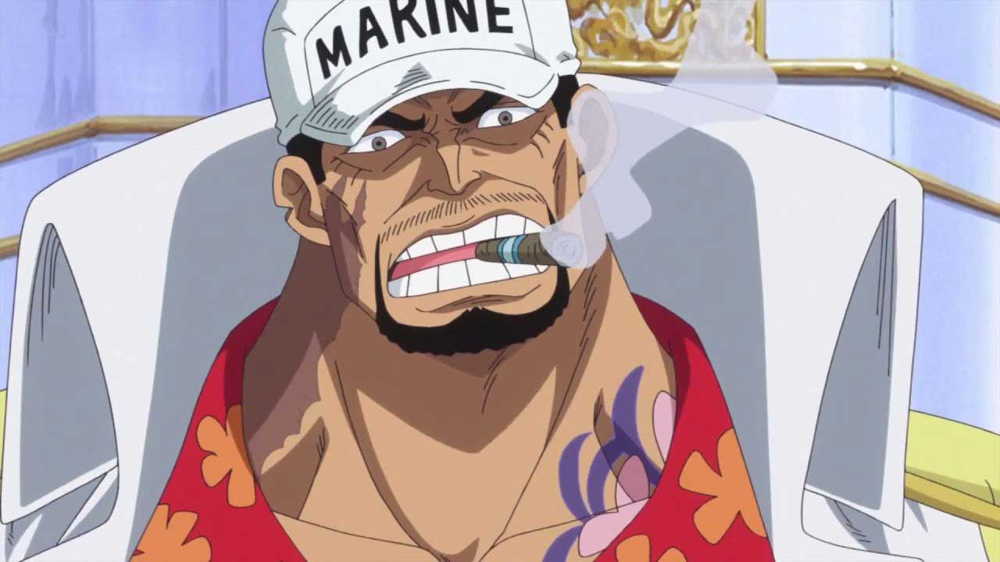
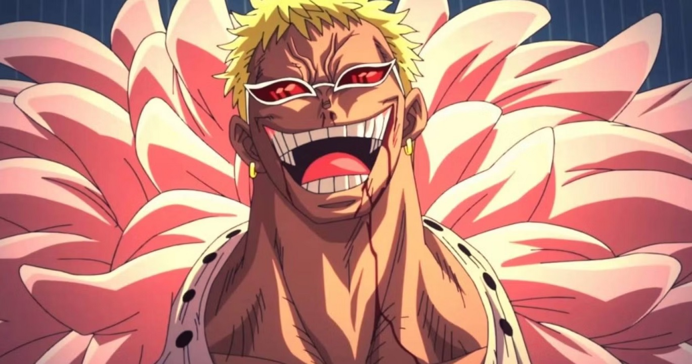
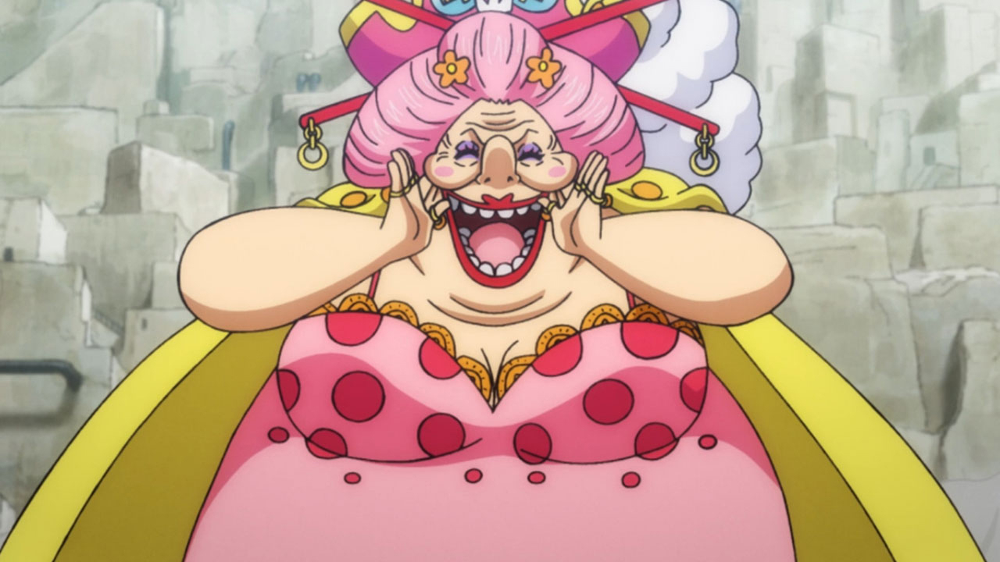

Gol D. Roger, conhecido pela maioria como Gold Roger, foi um lendário pirata que ficou
conhecido como Rei dos Piratas, Capitão dos Piratas do Roger, e proprietário do lendário tesouro
conhecido como "One Piece". Ele também foi o amante de Portgas D. Rouge e pai biológico de
Portgas D. Ace.
Roger era famoso como o homem que fazia o que ninguém achava possível - conquistar a Grand Line e
acumulando uma vasta fortuna, mas sabia que logo morreria por uma doença incurável. Ele se desfez de
sua equipe antes de se entregar para ser executado. O Governo Mundial pretendia que Roger fosse
executado publicamente para desencorajar a pirataria, mas suas últimas palavras tiveram o impacto
oposto. Ele afirmou que qualquer um que pudesse encontrar seu tesouro, poderia ficar com ele.
Monkey D. Luffy
(Retornar ao início)
Imagem referente ao capitão dos Chapéus de palha, Monkey D. Luffy.
Monkey D. Luffy, também conhecido como "Luffy do Chapéu de Palha" e comumente como "Chapéu de
Palha", é o fundador e capitão dos cada vez mais infames e poderosos Piratas do Chapéu de Palha,
bem como o mais poderoso de seus melhores lutadores. Ele deseja encontrar o tesouro lendário
deixado para trás pelo falecido Gol D. Roger e assim se tornar o Rei dos Piratas, o que ajudaria
a facilitar um sonho desconhecido dele que ele contou apenas para Shanks, seus irmãos e
tripulação. Ele acredita que ser o Rei dos Piratas significa ter a maior liberdade do
mundo.
Nascido na Vila Foosha, Luffy acidentalmente comeu a Gomu Gomu no Mi aos 7 anos de idade, que deu ao
seu corpo propriedades de borracha. Nesta época, Luffy conheceu Shanks, "o Ruivo", que lhe deu
seu chapéu de palha como parte de uma promessa para que eles se encontrassem novamente. Luffy é o
filho do líder Revolucionário Monkey D. Dragon, neto paterno do herói da Marinha Monkey D.
Garp, irmão jurado do falecido "Punhos de Fogo" Portgas D. Ace e do chefe de gabinete
Revolucionário Sabo, e filho adotivo de Curly Dadan. Ele é uma das poucas pessoas no mundo que
carregam a Vontade de D.
Luffy enfrentou inúmeras forças globais que encontrou, começando contra os piratas mais poderosos do
East Blue e avançando para confrontos contra a Marinha, os Shichibukai, a Cipher Pol, Nobres
Mundiais e até mesmo os Yonkou, emergindo vitorioso na maior parte destes confrontos. Ele invadiu e
indiretamente causou a destruição de Enies Lobby, escapou e causou uma fuga em massa em Impel Down,
e foi uma figura central na Guerra de Marineford. Ele derrotou ou fez amizade com sete dos onze
antigos Shichibukai, antes da dissolução da organização, e invadiu o território de dois Yonkou. As
realizações e a herança familiar de Luffy fizeram com que ele fosse rotulado como um "Futuro
Elemento Perigoso", enquanto ganhava a reputação de ser "imprudente" e, em alguns casos, "insano",
ganhando a ira do Almirante da Frota Sakazuki, do Quartel-General da Marinha e até mesmo do Governo
Mundial.
Luffy também tem uma propensão para atrair seguidores e, sem intenção, foi nomeado líder da Grande
Frota do Chapéu de Palha, composta por sete tripulações piratas que juraram vir em seu auxílio
sempre que ele desejasse. Depois de saber disso e de suas façanhas contra os Piratas da Big Mom, a
imprensa rotulou Luffy como o "Quinto Imperador do Mar", embora muitas figuras proeminentes
considerem isso um exagero. No entanto, após derrotar Kaidou no Arco País de Wano, Luffy foi
oficialmente declarado Imperador pelo Governo Mundial, ao lado de Buggy, ambos ocupando os postos
deixados por Kaidou e Big Mom.
Tendo tido uma recompensa de
300.000.000 antes de chegar ao Arquipélago de Sabaody, Luffy foi
um dos onze "Supernovas", piratas que simultaneamente alcançaram a Red Line com recompensas acima de
100.000.000 pouco antes da Guerra de Marineford. Ele, os outros dez Supernovas e Marshall
D. Teach foram posteriormente referidos como a "Pior Geração". Eventualmente, suas conquistas e
reputação contribuíram para sua atual recompensa de
3.000.000.000.
Durante o confronto contra Kaidou, Rei das Feras, em Onigashima, foi revelado que a fruta de Luffy é
uma Zoan Mítica, a Hito Hito no Mi Modelo: Nika, dando seu corpo propriedades de borracha e
liberdade apenas limitada por sua imaginação. As capacidades novas desta fruta ainda são
desconhecidas.
Shanks, "o Ruivo", comumente conhecido apenas como "Ruivo", é o chefe dos Piratas do
Ruivo e um dos Quatro Imperadores que governam o Novo Mundo.
Navegando com os infames Piratas do Roger desde criança, Shanks começaria sua carreira de pirata em
seu navio como um aprendiz ao lado de Buggy, antes de formar sua própria tripulação depois da morte
de Roger.
Doze anos atrás, enquanto estava em East Blue, Shanks inspirou o jovem garoto da aldeia, Monkey D.
Luffy a seguir sua própria jornada pirata, sendo assim o responsável pelo garoto se tornar o
notório fora-da-lei que ele é hoje. Ele também acidentalmente forneceu a Luffy a Gomu Gomu no Mi
para comer, e até sacrificou seu braço esquerdo para salvar o menino de ser comido pelo Senhor
da Costa no mar. Mais notavelmente, ele também possuía o chapéu de palha que pertenceu ao próprio
Gol D. Roger e se tornou o acessório exclusivo de Luffy, tendo-o presenteado ao menino como parte de
uma promessa de que eles se encontrariam novamente algum dia.
Roronoa Zoro
(Retornar ao início)
Imagem referente ao Imediato dos Chapéus de palha, Roronoa Zoro.
Roronoa Zoro, também conhecido como "Caçador de Piratas" Zoro, é o combatente dos Piratas do
Chapéu de Palha e um ex-caçador de recompensas.
Ele foi o primeiro membro a juntar-se à tripulação. Sua fama como mestre espadachim e sua grande
força, juntamente com as ações de seu capitão, às vezes levaram os outros a acreditar que ele era o
verdadeiro capitão da tripulação antes deste obter sua primeira recompensa, enquanto algumas pessoas
acreditam que ele seja o imediato.
Ele é um dos quatro melhores lutadores da tripulação, ao lado de Luffy, Sanji e Jinbe, e seu sonho é
se tornar o maior espadachim do mundo. Zoro também é considerado como um dos doze piratas que
são referidos como "A Pior Geração". Ele atualmente tem uma recompensa de
1.111.000.000.
Usopp é o Atirador dos Piratas do Chapéu de Palha. Ele é o quarto membro da tripulação e o terceiro
a entrar, fazendo isso no final do Arco Vila Syrup. Embora ele tenha deixado a tripulação durante o
Arco Water 7, ele se juntou novamente ao final do Arco Pós-Enies Lobby.
Usopp é o filho de Yasopp e Banchina. Ele nasceu e foi criado na Vila Syrup, e era o "capitão" dos
Piratas Usopp e o amigo mais próximo de Kaya. Após colaborar com os Chapéus de Palha para derrotar
Kuro e os Piratas do Gato Preto, ele foi convidado a se juntar à tripulação. Apesar de sua covardia
normal, Usopp sonha em se tornar um corajoso guerreiro do mar como seu pai, e vive todos os dias em
busca de viver à altura deste sonho.
Ele tem atualmente uma recompensa de
l500.000.000. Usopp recebe o posto de 5° Comandante
(seguindo a lógica de sua recompensa) já que a marinha o nomeou um dos comandantes do Luffy.
Sanji
(Retornar ao início)
Imagem referente ao cozinheiro dos Chapéus de palha, Sanji.
"Perna Preta" Sanji, nascido como Vinsmoke Sanji, e também é o cozinheiro dos Piratas
do Chapéu de Palha, assim como um antigo chefe de cozinha do Baratie. Ele também é o terceiro filho
e a quarta criança da Família Vinsmoke, tornando-o um príncipe do Reino Germa, até que ele
oficialmente os renunciou duas vezes. Apesar de Sanji renunciar ao seu sobrenome Vinsmoke, o
Governo Mundial o rotula como parte de seu nome em seu pôster de procurado.
Ele é oficialmente o quinto membro da tripulação e o quarto a se juntar, fazendo isso no final do
Arco Baratie. Uma vez que ele nasceu no North Blue, ele é o primeiro Chapéu de Palha a não se
originar do East Blue.
Ele é um dos quatro melhores lutadores da tripulação, ao lado de Luffy, Zoro e Jinbe. Seu sonho é
encontrar o paraíso dos chefes, All Blue, sendo esse o lugar onde o East Blue, o West Blue, o North
Blue e o South Blue se encontram, juntamente com sua vida selvagem. Devido aos eventos na Ilha Whole
Cake, sua recompensa atual é de
1.032.000.000, dando-lhe a quarta maior recompensa na
tripulação, ficando atrás apenas de Luffy, Zoro e Jinbe.[28]
Nami, a "Gata Ladra" é a navegadora dos Piratas do Chapéu de Palha e uma dos Oficiais Seniores
da Grande Frota do Chapéu de Palha. Ela é o terceiro membro da tripulação e a segunda a entrar,
fazendo isso durante o Arco Orange Town. Ela é irmã adotiva de Nojiko depois que os dois ficaram
órfãos e foram acolhidos por Bell-mère.
Ela era anteriormente um membro dos Piratas do Arlong e inicialmente se juntou aos Chapéus de Palha
para poder roubá-los e comprar de volta a sua aldeia de Arlong. No entanto, ela se juntou
legitimamente aos Chapéus de Palha depois que eles se rebelaram e derrotaram Arlong. Seu sonho é
fazer um mapa de todo o mundo.
Ela primeiro ganhou uma recompensa de
16.000.000 após a invasão em Enies Lobby.
Posteriormente, aumentou para
66.000.000 após o Arco Dressrosa. Após o Ataque à Onigashima,
sua recompensa foi aumentada para
366,000,000.
Smoker, o Caçador Branco é um oficial da Marinha estacionado na base G-5. Ele foi introduzido pela
primeira vez como um capitão (大佐, Taisa) em Loguetown, onde ele fez de sua missão de vida capturar
Luffy e jogá-lo numa prisão, e mais tarde foi promovido ao cargo de comodoro, devido aos
eventos em Alabasta. Em algum ponto durante o timeskip, ele foi promovido ao cargo de
Vice-Almirante. Ele também é, desde sua estreia, o superior de Tashigi, também servindo como seu
mentor.
Ele é um adversário recorrente de Luffy. Devido às suas ações contra Luffy em Loguetown, Smoker pode
ser considerado o principal antagonista do Arco Loguetown, e atua como um antagonista menor durante
o Arco Marineford. Apesar de sua rivalidade com Luffy, por razões de encontrar inimigos em comum,
eles acabaram se ajudando durante o Arco Alabasta, e formando uma aliança temporária durante o Arco
Punk Hazard, retornando após ambos os eventos para seu relacionamento como inimigos.
O "Rei do Deserto" Sir Crocodile é o ex-presidente da misteriosa organização criminosa
Baroque Works, anteriormente operando sob o codinome de "Mr. 0", com Nico Robin, anteriormente
conhecida como "Miss All Sunday", atuando como sua vice-presidente e braço direito (ela seria o
equivalente a uma imediata). Ele é o principal antagonista do Arco Alabasta e da Saga Alabasta em
geral, e um personagem coadjuvante no Arco Impel Down e no Arco Marineford.
Ele é um dos primeiros adversários mais antigos e notáveis da série, já que foi o primeiro inimigo
a entregar a Luffy uma derrota completa e absoluta. Ele foi originalmente apresentado como um dos
Shichibukai, mas mais tarde seu título foi destituído após uma tentativa fracassada para assumir
o controle do Reino de Alabasta e foi preso na lendária prisão Impel Down; sendo colocado no
Nível 6.
Crocodile foi libertado por Luffy de Impel Down em troca de ajudar no resgate de seu irmão e foi
para Marineford para participar da Guerra ao lado de Luffy e os Piratas do Barba Branca. Após a
guerra, ele e seu subordinado Daz Bonez decidiram ir para o Novo Mundo, onde Crocodile
estabeleceria a Cross Guild ao lado de seu ex-colega Shichibukai Dracule Mihawk, com outro
ex-Shichibukai e atual membro dos Quatro Imperadores, Buggy, atuando como figura de proa da
organização.
Tony Tony Chopper é uma rena. Ele é o médico da tripulação dos Piratas do Chapéu de Palha. Chopper é
uma rena que, após comer a Hito Hito no Mi, adquiriu a habilidade de se transformar e raciocinar
como os humanos. Ele é o sexto membro e um dos poucos membros da tripulação que nasceu na Grand
Line, numa ilha chamada Drum. Por ter sido confundido como mascote, a recompensa atual de sua
captura é de apenas
1.000. Mesmo sendo considerado "Mascote" pela marinha, ele foi nomeado
um dos comandantes do Luffy, sendo assim seguindo a lógica da sua recompensa o 9° Comandante.
Nico Robin
(Retornar ao início)
Imagem referente a arqueóloga dos chapéus de palha, Nico Robin.
Nico Robin, também conhecida como "Criança Demônio" e "Luz da Revolução", é a arqueóloga dos
Piratas do Chapéu de Palha. Ela é a única sobrevivente da ilha destruída de Ohara, localizada no
West Blue. Como resultado, ela é atualmente a única pessoa no mundo com a capacidade de ler e
decifrar Poneglyphs, uma habilidade que é considerada proibida e que ameaça o Governo Mundial.
Ela foi introduzida pela primeira vez como o vice-presidente da Baroque Works e antagonista
secundária da Saga Alabasta, conhecida como Miss All Sunday, antes de se juntar aos Chapéus de
Palha. Ela é a sétima integrante da tripulação, a sexta a se unir e, como Nami, é a segunda a
reentrar, chegando perto do final do Arco Enies Lobby. Robin também é o primeiro membro a ter sido
um antagonista. Ela comeu a Hana Hana no Mi.
Durante o Arco Pós-Guerra, ela se envolveu com os revolucionários por dois anos. Seu sonho é
encontrar o Rio Poneglyph, que conta a verdadeira história. Ela detém atualmente uma recompensa de
930.000.000.
Enel
(Retornar ao início)

Imagem referente a Enel, o antigo governante de skypiea.
Enel é o ex-governante tirânico - ou "Deus" - de Skypiea.
Anteriormente um habitante de Birka, Enel destruiu sua terra natal através dos poderes da Goro Goro
no Mi e então assumiu o controle de Skypiea com seus seguidores. Seu objetivo final era alcançar a
"Fairy Vearth", tendo construído um dirigível com o ouro de Shandora para atingir tal objetivo.
Depois de ser derrotado por Monkey D. Luffy e ainda assim, chegar com sucesso à lua, Enel se tornou
seu novo governante.
Enel é o principal antagonista do Arco de Skypiea e, portanto, o principal antagonista da Saga de
Skypiea como um todo. Após sua derrota em Skypiea, ele se tornou o personagem central da História de
Capa A Grande Operação Espacial de Enel.
Franky
(Retornar ao início)

Imagem referente ao carpinteiro dos chapéus de palha, o cyborg Franky.
Franky é o carpinteiro dos Piratas do Chapéu de Palha. Ele é um cyborg de 36 anos de Water 7 e foi
introduzido na história como o líder da Família Franky, um grupo de desmantelamento de navios. Ele
foi originalmente chamado de "Cutty Flam" até trocar seu nome original por seu apelido a pedidos de
Iceburg para esconder sua identidade. Franky e seus seguidores foram inicialmente introduzidos como
antagonistas do Arco Water 7 contra os Chapéus de Palha até as circunstâncias forçá-los a se
tornarem aliados. A pedido da Família Franky, Franky foi permitido se juntar aos Chapéus de Palha
para realizar seu sonho de criar e dirigir um navio capaz de dar a volta ao mundo, o Thousand Sunny.
Ele é o oitavo membro da tripulação dos Chapéus de Palha e o sétimo a se juntar ao bando de Luffy.
Ele também é o segundo membro a ser um ex-antagonista (o primeiro sendo Nico Robin). Ele tem uma
recompensa de
394.000.000. Ele é originário do South Blue, de onde saiu 32 anos atrás como
uma criança de apenas quatro anos de idade. Franky ainda foi considerado pela marinha um dos 9
comandantes de Luffy, sendo o 6° Comandante, seguindo a lógica da sua recompensa (embora na foto de
seu cartaz de procurado esteja a foto do Sunny).
Brook
(Retornar ao início)

Imagem referente ao músico dos chapéus de palha, o esqueleto Brook.
Brook é o Músico dos Piratas do Chapéu de Palha. Ele é um esqueleto que os Chapéus de Palha
encontraram a bordo de um navio fantasma depois de entrarem no Triângulo Florian. Ele é um usuário
de Akuma no Mi que comeu a Yomi Yomi no Mi, o que o torna um pseudo-imortal por causa de seus
poderes. Ele é o nono membro do Bando do Chapéu de Palha, e o oitavo a se juntar à tripulação de
Luffy. Ele é também um dos dois Espadachins a bordo de seu atual navio, o outro sendo Zoro. Ele
preenche o cargo do tão esperado músico que Luffy queria para sua tripulação desde que sua jornada
começou. Brook foi nomeado pela marinha como um dos comandantes de Luffy, Sua recompensa atual é de
383.000.000.
Gecko Moria é o capitão dos Piratas Thriller Bark e ex-membro dos Shichibukai que reside em
Thriller Bark, o maior navio do mundo. Sua recompensa é de
320.000.000, que foi congelada até
ele perder sua posição de Shichibukai.
Em sua juventude, Moria serviu como capitão dos Piratas Gecko, até que a grande maioria de seus
membros foram mortos em uma luta contra Kaidou dos Quatro Imperadores. Este evento traumático levou
Moria a buscar o poder através de um exército de zumbis, construído por seu subordinado, Dr.
Hogback.
Ele é o principal antagonista da Saga Thriller Bark que roubou as sombras de Brook e de vários
outros seres com os poderes da Kage Kage no Mi. Ele também é um grande antagonista no Arco
Marineford, onde participou da Batalha de Marineford e se aliou à Marinha, junto com a maioria dos
outros Shichibukai.
Após o fim da guerra, ele perdeu seu título e foi eliminado por Donquixote Doflamingo, mas
conseguiu escapar para o Novo Mundo. Vegapunk mais tarde clonou Moria como um dos Seraphim para
substituir os Shichibukai. Dois anos depois da guerra, ele atacou os Piratas do Barba Negra em
Hachinosu, apenas para ser preso.
Marshall D. Teach, mais comumente chamado por seu epíteto Barba Negra, é o capitão que virou
almirante dos Piratas do Barba Negra, e um dos Quatro Imperadores. Ele também é a única pessoa
conhecida na história a exercer os poderes de duas Akuma no Mi. Além disso, ele também faz parte
de uma linhagem especial. Esse fato, no entanto, só é conhecido por um pequeno número de indivíduos,
incluindo sua própria tripulação e os Cinco Anciões.
Teach começou sua carreira de pirata como aprendiz dos Piratas do Barba Branca, e mais tarde
tornou-se membro da 2ª Divisão da tripulação. No entanto, ele desertou após ter assassinado
Thatch, o comandante da 4ª Divisão, para roubar a Yami Yami no Mi. Antes do timeskip de dois
anos, ele ocupou brevemente uma posição entre os Shichibukai após derrotar o infame Portgas D. Ace e
entregá-lo a Marinha, antes de renunciar ao retornar de Impel Down com vários prisioneiros do
Nível Seis para fortalecer sua tripulação. Suas ações resultaram em ele ser considerado parte da
"Pior Geração" junto com os onze Supernovas. Seu assassinato de Barba Branca na Batalha de
Marineford e consequentemente o roubo de sua Gura Gura no Mi, bem como sua vitória na Guerra do
Acerto de Contas e a conquista da maioria dos territórios do Barba Branca durante o timeskip,
resultou em seu reconhecimento como um dos Quatro Imperadores. Ele também transformou a ilha de
Hachinosu em sua base de operações após o Incidente de Rocky Port.
Ele inicialmente não tinha recompensa; no entanto, após renunciar aos Shichibukai, recrutar
vários criminosos perigosos para sua tripulação de Impel Down, e se tornar um dos Quatro
Imperadores, ele recebeu uma recompensa de
2.247.600.000. Após as quedas de Kaidou e Big
Mom durante o Arco País de Wano, sua recompensa foi aumentada para
3.996.000.000.
Como suas ações desempenharam um papel fundamental na morte de Portgas D. Ace e no subsequente
timeskip, ele serve como um dos principais antagonistas da segunda metade da série. Além disso,
devido às suas ações e papel, ele é um antagonista menor nos Arcos Ilha Drum, Jaya e Dressrosa, o
antagonista secundário em nos Arcos Pós-Enies Lobby e Impel Down, um dos três principais
antagonistas do Arco Marineford ao lado de Sengoku e Sakazuki, o principal antagonista da Saga
Guerra de Marineford em geral, e um dos principais antagonistas da Saga Final.
Portgas D. Ace
(Retornar ao início)

Imagem referente ao comandante da 2ª divisão do Barba Branca, Portgas D. Ace.
Portgas D. Ace, nascido como Gol D. Ace e apelidado de Ace "Punhos de Fogo", era o filho
biológico do falecido Rei dos Piratas, Gol D. Roger, e Portgas D. Rouge, bem como o irmão mais
velho de consideração de Luffy e Sabo. Ace foi adotado por Monkey D. Garp, conforme havia
sido solicitado por Roger antes de sua execução. Ace era capitão dos Piratas Spade antes de
ser recrutado para os Piratas do Barba Branca e se tornar comandante da sua 2ª divisão. Ele comeu
a Mera Mera no Mi, dando-lhe o poder de se transformar e manipular chamas.
Depois que Barba Negra, um membro de sua divisão, cometeu o crime imperdoável de assassinar um
companheiro de tripulação e fugir, Ace partiu em uma missão para caçá-lo. Quando Ace finalmente
encontrou Barba Negra, porém, um duelo acalorado resultou na derrota de Ace, permitindo que Barba
Negra o entregasse ao Governo Mundial. Preocupados com sua linhagem e querendo dar o exemplo, a
Marinha condenou Ace à morte, o que resultou na Batalha de Marineford, um choque total de poderes
entre Barba Branca e o poder da Marinha e dos Shichibukai. Ace foi libertado, mas antes que ele
pudesse escapar de Marineford, ele sacrificou sua vida para proteger Luffy do Almirante da Marinha
Akainu.
A morte de Ace acabou provando ser o catalisador que levou Luffy a treinar por dois anos para se
tornar forte o suficiente para proteger seus companheiros, abrindo caminho para a segunda metade da
série. Sua Akuma no Mi reencarnada acabaria sendo consumida por seu irmão de consideração, Sabo,
garantindo que sua Vontade Herdada passaria adiante.
Bartholomew Kuma é um ex-Shichibukai, o antigo rei do Reino Sorbet, e um oficial e membro
fundador do Exército Revolucionário com uma recompensa de
296.000.000. Como pirata, Kuma
navegou pelos mares como uma tripulação de uma só pessoa. Ele também é o pai adotivo de
Jewelry Bonney, filha de sua falecida amiga e colega revolucionária Ginny. Kuma é membro de
uma raça especial quase extinta conhecida como bucaneiros, que ele herdou de seu falecido pai,
Clapp.
Devido às mentiras que o Governo Mundial contou ao público, Kuma passou a ser temido como um pirata
extremamente cruel, ganhando o título de "Tirano". Em troca de curar Bonney da doença mortal
Escamas de Safira, Kuma se tornou um tipo especial de ciborgue conhecido como "Pacifista",
desenvolvido pelo cientista de renome mundial Vegapunk. Quando Vegapunk terminou suas
modificações em Kuma, o Shichibukai foi convertido no primeiro ciborgue Pacifista completo, com a
série PX-0, e morreu mentalmente no processo. Kuma foi escravizado pelos Nobres Mundiais duas
vezes em sua vida; a primeira vez foi em sua infância até escapar durante o Incidente de God
Valley, e a segunda vez na idade adulta como punição pelos dois anos que passou protegendo o
Thousand Sunny; isso durou até que seus companheiros revolucionários o libertaram durante o
Levely mais recente. Vegapunk também clonou Kuma como S-Bear, um dos Seraphim que foram
projetados para substituir os Shichibukai.
Embora Kuma tenha sido apresentado como um dos principais antagonistas durante os Arcos Thriller
Bark e Arquipélago de Sabaody, ele era secretamente um aliado, e sua ação de separar os Piratas do
Chapéu de Palha foi, em última análise, feita para o benefício deles, pois os salvou do Almirante
Kizaru e ajudou o capitão da tripulação, Monkey D. Luffy, a perceber que sua tripulação precisava se
tornar mais forte; assim, Kuma desempenhou um papel fundamental no subsequente timeskip. Em seu
estado sem consciência, Kuma é um dos principais antagonistas do Arco Marineford, onde participou da
Guerra de Marineford e ficou do lado dos marinheiros, juntamente com a maioria dos outros
Shichibukai. Ele também tem um papel de destaque durante o Arco Egghead, sendo uma figura
importante por trás de seus acontecimentos.
Edward Newgate, mais conhecido como "Barba Branca", foi o capitão dos Piratas do Barba Branca e
aquele que ficou conhecido como "O Homem Mais Forte do Mundo" e "O Homem Mais Próximo do One Piece"
após a morte de Gol D. Roger.
Antes de formar sua própria tripulação, ele era um membro dos lendários Piratas Rocks e mais tarde
ele se tornou um dos Quatro Imperadores que governam o Novo Mundo, antes de sua morte na
Batalha de Marineford.
Em seu auge, Barba Branca alcançou o título de "Homem Mais Forte do Mundo" muito antes da Grande Era
dos Piratas e da morte de Roger que era seu rival, pois tinha um poder imenso e habilidade para
destruir o mundo.
Monkey D. Dragon
(Retornar ao início)

Imagem referente ao revolucionário Monkey D. Dragon, pai de Luffy do chapéu de palha.
Monkey D. Dragon, também conhecido como "Dragão Rebelde", é o infame Comandante Supremo (総司令官
Sōshireikan) do Exército Revolucionário e um de seus membros fundadores, além de ter sido o
capitão do Exército da Libertação. Ele já fez parte da Marinha, mas ficou desiludido com a visão
de justiça da organização; isso, juntamente com as consequências do Incidente de Ohara, despertou
o desejo de Dragon de tentar derrubar o Governo Mundial, e seus esforços acabaram fazendo com que
ele fosse rotulado como o "Pior Criminoso do Mundo".
Dragon é o pai de Monkey D. Luffy e o filho de Monkey D. Garp, tendo nascido no Reino de Goa, assim
como eles. Ele também foi responsável por salvar a vida de Sabo depois que este quase se afogou
devido ao ataque de um Nobre Mundial, eventualmente transformando o garoto em seu vice-comandante.
Sakazuki
(Retornar ao início)

Imagem referente ao almirante de frota da marinha, Sakazuki.
Sakazuki, anteriormente conhecido por seu apelido de almirante Akainu, é o atual Almirante de
Frota da Marinha, sucedendo ao Almirante de Frota anterior, Sengoku. Durante a primeira metade da
série, ele foi um dos três Almirantes, e foi o último dos três a aparecer. Ao se tornar
Almirante da Frota, uma das primeiras decisões de Sakazuki foi mudar o Quartel-General da Marinha
para o Novo Mundo em preparação para a Nova Era dos Piratas.
No mangá, Akainu foi mencionado pela primeira vez por Nico Robin durante o encontro inicial com
Aokiji. No anime, ele foi mencionado anteriormente pelo Vice-Almirante Jonathan durante o arco
filler G-8, que foi ao ar após Akainu ter sido revelado no mangá.
Sakazuki é talvez o seguidor mais estridente da Justiça Absoluta em toda a série, a tal ponto que
seu extremismo levou seu colega almirante Aokiji a se opor à sua promoção a almirante da frota e
renunciar a Marinha depois que esse esforço falhou. Por causa de suas ações, Sakazuki é um dos
três principais antagonistas do Arco Marineford ao lado de Sengoku e Marshall D. Teach, entre os
principais antagonistas da Saga Final, e, após sua promoção, ele atualmente atua como um antagonista
muito proeminente para o restante da série.
Trafalgar D. Water Law,[16] mais comumente conhecido como apenas Trafalgar Law ( ト ラ フ ァ ル ガ ー ・ ロ ー
Torafarugā Rō?) e por seu epíteto como o "Cirurgião da Morte", é um pirata do North Blue e capitão e
médico dos Piratas Heart. Ele é um dos doze piratas que são referidos como a "Pior
Geração". Ele se tornou um dos Shichibukai durante o timeskip, mas sua posição foi
revogada por se aliar aos Piratas do Chapéu de Palha e derrubar Donquixote Doflamingo. Law, como
muitos outros piratas, sonha em encontrar o One Piece.
Durante o timeskip, sua recompensa aumentou de
200.000.000 para
440.000.000
antes de ser congelada. Depois que ele foi expulso dos Shichibukai, a recompensa de Law foi elevada
para
500.000.000. Logo depois no Arco de Wano após Law e Kid se unirem para derrotar a antiga
Yonkou Big Mom, a recompensa de Law foi elevada para
3.000.000.000.
Kaidou das Feras, também conhecido como a "Criatura Mais Forte do Mundo", é o
Governador-Geral dos Piratas das Feras e um ex-Yonkou. Ele e sua tripulação ocupavam o
País de Wano em aliança com seu shogun, Kurozumi Orochi, e mais recentemente firmaram uma
aliança com a companheira Yonkou Big Mom e sua tripulação, os Piratas da Big Mom.
Décadas atrás, antes da formação de sua própria tripulação, Kaidou fazia parte dos lendários Piratas
Rocks como um aprendiz.
Kaidou foi referido pela primeira vez por Monkey D. Garp no Arco Pós-Enies Lobby e então
mencionado diretamente por Gecko Moria no Arco Thriller Bark, com seu título de Yonkou sendo
revelado logo após os Piratas do Chapéu de Palha derrotarem Moria. Assim, Kaidou é o terceiro
imperador a ser mencionado pelo nome e o último a estrear. Devido a suas ações e seu papel,
ele é o principal antagonista do Arco País de Wano e um dos antagonistas centrais da Saga Yonkou.
Depois de ser derrotado por Luffy, Kaidou foi destituído de sua posição como Yonkou.
Donquixote Doflamingo
(Retornar ao início)

Imagem referente ao ex-Shichibukai Donquixote Doflamingo.
Donquixote Doflamingo, apelidado de "Demônio Celestial", é o capitão dos Piratas
Donquixote. Antes de sua prisão, ele era um membro dos Shichibukai com uma recompensa congelada
de
340.000.000, bem como o corretor do submundo mais influente sob o codinome de
"Joker". Ele também é um ex-Nobre Mundial, descendente da Família Donquixote.
Ele é o primeiro filho do falecido Donquixote Homing e o irmão mais velho do falecido
Rosinante, ambos os quais ele matou por se sentir traído por eles. Doflamingo se tornou
o Rei de Dressrosa após assumir o trono de Riku Doldo III oito anos antes do início da série.
Ele governou o país tiranicamente até foi destituído de sua posição como Shichibukai e rei depois de
ser derrotado por Monkey D. Luffy perto do final do Arco Dressrosa. Depois que Doflamingo foi preso
pelo Almirante Fujitora junto com a maior parte de sua tripulação, ele foi preso em Impel Down e
colocado no Nível 6. Vegapunk mais tarde clonou Doflamingo como um dos Seraphim para substituir
os Shichibukai.
Ele é um grande antagonista no Arco Marineford, onde participou da Batalha de Marineford e se aliou
a Marinha, junto com a maioria dos outros Shichibukai, e o principal antagonista do Arco Dressrosa e
da Saga Dressrosa como um todo, sendo importante para todos os acontecimentos da saga.
Charlotte Linlin
(Retornar ao início)

Imagem referente a ex-yonkou Big Mom, Charlotte Linlin.
Charlotte Linlin, mais conhecida como Big Mom, é a capitã dos Piratas da Big Mom e foi
anteriormente uma dos Quatro Imperadores governando o Novo Mundo, como o único membro feminino desse
grupo. Ela também é a matriarca da grande Família Charlotte, cujos muitos filhos compõem a
infraestrutura de sua tripulação. Ela também é a criadora da raça única de criaturas conhecidas
como Homies, que principalmente habitam toda Totto Land e servem ela com alegria. Big Mom possui
três Homies especiais, Napoleon, Prometheus e Zeus, mas insatisfeita com os contínuos fracassos de
Zeus, Big Mom decidiu renegá-lo e substituí-lo por um novo Homie chamado Hera.
Big Mom governa Totto Land como sua rainha, buscando transformá-la em uma utopia onde todas as
raças do mundo podem viver juntas em paz, sem discriminação ou segregação. Durante sua infância,
Linlin foi criada na Casa das Ovelhas sob Carmel, cujo poder da Akuma no Mi ela eventualmente
herdou, antes de co-fundar sua própria tripulação pirata com Streusen após a morte de Carmel.
Big Mom também fazia parte dos lendários Piratas Rocks como um de seus membros principais. Depois
de enfrentar o colega Imperador Kaidou (outro ex-membro da tripulação de Rocks), ela formou uma
aliança com Kaidou e os Piratas das Feras com a intenção de conquistar o mundo. No entanto, isso
nunca se concretizou, pois sua aliança seria derrotada pela Aliança Ninja-Pirata-Mink-Samurai.
Após sua derrota no País de Wano para Eustass Kid e Trafalgar Law, o Jornal Econômico Mundial
divulgou uma nova lista dos Quatro Imperadores, com Big Mom não sendo mais incluída entre eles.
Em Wano, por estar isolado, a reputação de Linlin era em grande parte desconhecida, especialmente
com a ameaça mais imediata, Kaido, ocupando o país. No entanto, após o Ataque à Onigashima, devido
ao seu poder monstruoso e capacidade de gerar "yōkai" do mito, ela foi credenciada no folclore do
evento de seu país como a "Grande Yōkai Oiran" ("妖怪" 大花魁 "Yōkai" Ō-oiranl?).
Big Mom foi a última dos Quatro Imperadores a ser nomeada; seu epíteto foi revelado pela primeira
vez após a Batalha de Marineford por Eustass Kid e seu nome verdadeiro foi revelado por Pappag na
Ilha dos Homens-Peixe. Ela é a principal antagonista do Arco Ilha Whole Cake e da Saga Ilha
Whole Cake como um todo, a antagonista secundária da segunda metade do Arco País de Wano, e a
antagonista secundário da Saga País de Wano em geral.
Jinbe
(Retornar ao início)
Imagem referente ao ex-Shichibukai e atual membro dos chapéus de palha, Jinbe.
"Cavaleiro do Mar" Jinbe é o timoneiro dos Piratas do Chapéu de Palha. Ele é o décimo membro da
tripulação e o nono a se juntar, fazendo isso durante o Arco País de Wano.
Jinbe é um homem-peixe sendo um tubarão-baleia e um poderoso mestre do karatê Homem-Peixe. Seu sonho
é realizar o desejo moribundo de seu ex-capitão Fisher Tiger de coexistência e igualdade entre
humanos e homens-peixe.
Ele era um membro dos Piratas do Sol, se tornando seu segundo capitão após a morte de seu capitão
original, Tiger. No decorrer da história, se tornou um dos Shichibukai, embora tenha renunciado
durante a Batalha de Marineford.
Antes e durante a guerra, Jinbe fez amizade com Monkey D. Luffy e dois anos depois aliou-se a ele e
sua tripulação para evitar o golpe de estado dos Novos Piratas Homens-Peixe contra o Reino Ryugu da
Família Real de Neptune. Luffy posteriormente o convidou para se juntar aos Piratas do Chapéu de
Palha, mas Jinbei adiou até romper os laços com Big Mom durante o Arco Ilha Whole Cake. Depois
de ficar para trás em Totto Land para proteger os Piratas do Sol da ira de Big Mom, Jinbe voltou
para os Chapéus de Palha durante o Terceiro Ato do Arco País de Wano, anunciando oficialmente seu
status como membro da tripulação.
Ele atualmente tem uma recompensa de
1.100.000.000.
Dr. Vegapunk é o principal cientista da SSG, a Divisão Científica Especial da Marinha. Seu trabalho
inclui a descoberta dos segredos e usos da Kairoseki, os segredos de como os poderes de Akuma no Mi
funcionam, a co-descoberta do Fator de Linhagem e suas aplicações, a criação dos Pacifistas e dos
Seraphim, e várias outras conquistas científicas que dizem estar pelo menos 500 anos à frente da
tecnologia atual. Ele nasceu na Ilha Karakuri, uma ilha avançada tecnologicamente e
atualmente reside em Egghead, onde seu laboratório está localizado.
Antes de ser contratado pelo Governo Mundial, Vegapunk foi diretor de um grupo de pesquisa
científica ilegal conhecido como MADS, onde trabalhou ao lado de outros cientistas notáveis, como
Caesar Clown, Vinsmoke Judge, Queen e Buckingham Stussy. O grupo acabou sendo preso e Vegapunk foi
mais tarde integrado à Marinha como seu cientista-chefe após a dissolução dos MADS. No entanto,
quando o Governo Mundial soube que ele estava pesquisando o Século Perdido, eles enviaram a CP0 e
conspiraram com York para eliminá-lo. Vegapunk acabou recebendo um golpe fatal de seu antigo amigo,
o almirante Kizaru, durante o Buster Call em Egghead.
Ele e seus satélites (exceto York) são grandes aliados dos Piratas do Chapéu de Palha durante o Arco
Egghead.